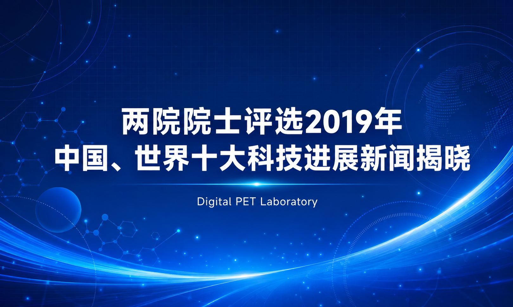
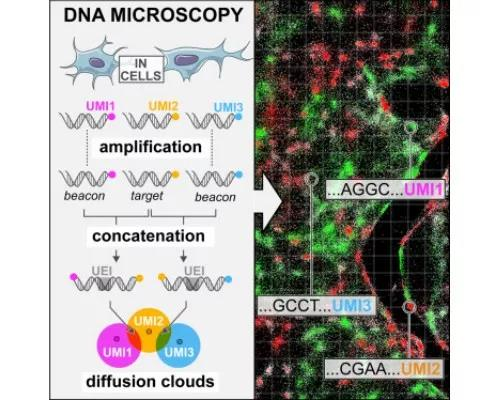
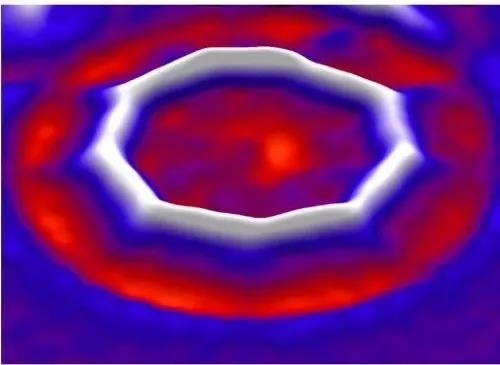
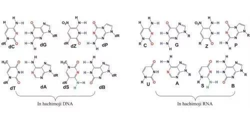

两院院士评选2019年中国、世界十大科技进展新闻揭晓
由中国科学院、中国工程院主办，中国科学院学部工作局、中国工程院办公厅、中国科学报社承办，中国科学院院士和中国工程院院士投票评选的2019年中国十大科技进展新闻、世界十大科技进展新闻，1月11日在京揭晓。
此项年度评选活动至今已举办了26次。
评选结果经新闻媒体广泛报道后，在社会上产生了强烈反响，使公众进一步了解国内外科技发展的动态，对宣传、普及科学技术起到了积极作用。
2019年中国十大科技进展新闻
1.嫦娥四号实现人类探测器首次月背软着陆
嫦娥四号在月球背面的工作时长已超过300天，远超设计寿命；“玉兔二号”巡视器克服各项障碍，行驶里程也已超过300米，实现了“双三百”的突破。
根据搭载科学载荷所取得的数据，科研团队重构了嫦娥四号月球背面下降轨迹，对着陆点进行了精确定位；获取了着陆区形貌、构造、成分等地质信息，发现以橄榄石和低钙辉石等矿物组分为主的岩石，并对其来源作出初步判断，对揭示艾特肯盆地地质演化乃至月壳早期演化历史、月球深部物质结构及形成机理等科学问题具有重要价值；另外，在中性原子、月表中子与辐射剂量及低频射电频谱等领域获取了大量数据，并取得了初步分析结果。
2.我国天文学家发现迄今最大恒星级黑洞
2019年11月28日，国际科学期刊《自然》发布了中国科学院国家天文台刘继峰、张昊彤研究团队的一项重大发现。
依托我国自主研制的国家重大科技基础设施郭守敬望远镜（LAMOST），研究团队发现了一颗迄今为止质量最大的恒星级黑洞，并提供了一种利用LAMOST巡天优势寻找黑洞的新方法。
这颗70倍太阳质量的黑洞远超理论预言的质量上限，颠覆了人们对恒星级黑洞形成的认知，有望推动恒星演化和黑洞形成理论的革新。
据悉，在发现迄今质量最大恒星级黑洞的基础上，研究团队的下一步工作将实施“黑洞猎手”计划，未来5年预计发现并测量近百个黑洞。
3.我国科学家首次观测到三维量子霍尔效应
霍尔效应描述了当磁场加载到金属和半导体上时，电力与磁力之间的一种相互关系。近140年来，国际科学界相继发现了霍尔效应和量子霍尔效应。
中国科学技术大学乔振华课题组与南方科技大学张立源课题组等合作，首次在毫米级的碲化锆（ZrTe5）块体单晶体材料中观测到三维量子霍尔效应的明确证据，并指出该效应可能是由于磁场下相互作用产生的电荷密度波诱导的。这一重要研究成果于2019年5月9日在线发表在国际知名学术期刊《自然》上。
据悉，自从1980年发现量子霍尔效应后，学界把注意力集中在二维体系。这次发现的三维量子霍尔效应，补全了霍尔效应家族的一个重要拼图。
4.我国科学家研制出新型类脑计算芯片
历经多年努力，我国科学家研制成功面向人工通用智能的新型类脑计算芯片——“天机芯”芯片，而且成功在无人驾驶自行车上进行了实验。
清华大学类脑计算研究中心施路平教授团队的相关论文《面向人工通用智能的异构“天机芯”芯片架构》，2019年8月1日在国际期刊《自然》杂志以封面文章的形式发表。
据悉，“天机芯”第一代、第二代产品分别于2015年、2017年研制成功。经过不断改进设计，目前的第二代“天机芯”具有高速、高性能、低功耗的特点。
未来“天机芯”的发展方向，是为人工通用智能的研究提供高能效、高速、灵活的计算平台，还可用于多种应用开发，促进人工通用智能研究，赋能各行各业。
5.世界首台百万千瓦水电机组核心部件完工交付
由东方电气集团东方电机有限公司研发制造的白鹤滩水电站首台百万千瓦水轮发电机组的转轮，于2019年1月12日上午在电站工地的转轮厂房正式完工，并较原计划提前交付。
这将有力确保白鹤滩水电站在2021年如期实现首台机组投产发电的目标。
据悉，百万千瓦水电机组是当今世界上单机容量最大机组，也是中国水电向世界水电“无人区”发起的冲刺。整个机组中最为核心、研制难度最大的部件就是转轮，堪称机组的“心脏”。转轮总重达353吨，经过了24道工序，由100余名东电工匠耗时12个月“精雕细琢”完成。而整个百万千瓦机组的设计研发历时十年之久。
6. “太极一号”在轨测试成功 我国空间引力波探测迈出第一步
我国首颗空间引力波探测技术实验卫星第一阶段在轨测试任务顺利完成。
2019年9月20日，该卫星被命名为“太极一号”。在空间可以探测到中低频段的引力波信号，但由于引力波信号极其微弱，需要突破目前人类精密测量和控制技术的极限。
中科院科研团队在不到一年时间里完成了“太极一号”的研制任务。
第一阶段在轨测试结果表明，激光干涉仪位移测量精度达到百皮米量级，约为一个原子的大小；引力参考传感器测量精度达到重力加速度的百亿分之一，相当于一只蚂蚁推动“太极一号”卫星产生的加速度；微推进器推力分辨率达到亚微牛量级，约为一粒芝麻重量的万分之一。我国空间引力波探测迈出奠基性的第一步。
7.最新研究表明自然界中约24%的材料可能具有拓扑结构
2019年2月28日凌晨，来自中科院物理所、南京大学和美国普林斯顿大学的3个研究组分别在《自然》杂志发布了最新相关研究成果。
他们的研究表明，数千种已知材料都可能具有拓扑性质，即自然界中大约24%的材料可能具有拓扑结构。拓扑，描述的是几何图形或空间在连续改变形状后还能保持不变的性质。
当 “拓扑”这一数学概念被引入物理学领域后，一方面推动了基础物理学研究的发展，另一方面也促使大量新颖拓扑材料出现。
8.我国科学家解析“奇葩”光合物种硅藻捕光新机制
中国科学院植物研究所的一项最新研究发现了自然界“奇葩”光合物种——硅藻如何利用其独特结构去高效地捕获、利用光能。北京时间2019年2月8日，知名学术期刊《科学》以长文形式在线发表了这一成果。
基于该研究，科学家未来有望设计出可以高效“捕光”的新型作物。中科院植物所的沈建仁和匡廷云研究团队解析了硅藻的主要捕光天线蛋白高分辨率结构，这是硅藻的首个光合膜蛋白结构解析研究工作，为研究硅藻的光能捕获、利用和光保护机制提供了重要的结构基础。
9.我国自主研发临床全数字PET/CT装备获准进入市场
华中科技大学谢庆国教授团队发明的全数字PET/CT，已于2019年5月31日通过国家药品监督管理局注册审批，获得市场准入和对外销售资质。这意味着国产全数字PET打破国际技术垄断，我国高端医疗仪器开发取得重大突破。
PET是正电子发射断层成像的简称，是继超声、CT和核磁共振之后当今的尖端医学影像技术，在恶性肿瘤、神经系统疾病、心血管疾病等重大疾病早期诊断、疗效评估、病理研究等方面，具有极大应用价值。
10.科学家发现16万年前丹尼索瓦人下颌骨化石
我国科学家联合多名境内外研究人员在2019年5月2日的《自然》杂志上发表文章称，在海拔3280米的青藏高原东北部甘肃省夏河县白石崖溶洞，发现的一件人类下颌骨化石经鉴定为丹尼索瓦人下颌骨化石。
这一研究成果将青藏高原史前人类最早活动时间，由距今4万年推早至距今16万年，整整向前推进了12万年。
由中国科学院青藏高原研究所陈发虎院士、兰州大学资源环境学院张东菊副教授和德国马普学会进化人类学研究所Jean-Jacques Hublin教授等带领的研究团队，对化石发现地及其周边地区进行了近十年的系统考古调查，发现了大批可能与该化石共存的文化遗存，为深入研究丹尼索瓦人的文化内涵、行为特征和高海拔环境适应策略等提供了关键信息。
2019年世界十大科技进展新闻
1.人类首次“看到”了黑洞
数百名科研人员参与合作的“事件视界望远镜”项目于2019年4月10日在全球多地同时召开新闻发布会，发布他们拍到的第一张黑洞照片。
照片“主角”是室女座超巨椭圆星系M87中心的超大质量黑洞，其质量是太阳的65亿倍，距离地球大约5500万光年。
照片展示了一个中心为黑色的明亮环状结构，看上去有点像甜甜圈，其黑色部分是黑洞投下的“阴影”，明亮部分是绕黑洞高速旋转的吸积盘。
照片给出黑洞这一极端天体存在的最直接证据，验证了广义相对论，也将帮助回答星系中的壮观喷流如何产生并影响星系演化等诸多前沿问题。
2.DNA显微镜研制成功

美国霍华德－休斯医学研究所和布罗德研究所共同开发出“DNA显微镜”，这是一种全新的细胞可视化技术，利用化学手段获取细胞内部信息，绘制的图像反映出细胞内生物分子的基因序列和相对位置的情况。
该项研究发表在2019年6月20日出版的《细胞》杂志上。
据悉，DNA显微镜可以做一些光学显微镜做不到的事情。例如，光学显微镜往往无法区分DNA存在差异的细胞，例如免疫细胞，而通过识别能够攻击肿瘤的免疫细胞，DNA显微镜则可以帮助改善某些癌症的治疗。
3.隼鸟2号首次降落小行星“龙宫”并采样
日本宇宙航空研究开发机构于2019年2月22日表示，根据接收到的数据判断，日本当地时间7时48分（北京时间6时48分），小行星探测器隼鸟2号成功降落在小行星“龙宫”上并采集样本，经短暂停留后再次升空。
据悉，隼鸟2号于2014年12月从日本鹿儿岛县种子岛宇宙中心发射升空，经过约3年半的太空之旅，2018年6月27日抵达小行星“龙宫”附近。它预定在“龙宫”附近逗留约1年半，2020年底返回地球。
4.谷歌研究人员宣布成功演示“量子优势”
“量子优势”被用于描述量子计算机发展的关键节点，指量子计算机能解决传统计算机在合理时间范围内无法解决的一些特殊问题。
要实现这一目标需要克服很多挑战，在产生较大计算空间的同时要保证较低错误率，以及设计一种传统计算机难以处理但量子计算机可以轻松完成的基准测试。
谷歌公司研究人员领衔的团队于2019年10月23日在英国《自然》杂志发表论文称已成功演示了“量子优势”，让量子系统花费约200秒完成了传统超级计算机在几天之内才能完成的任务。
5.科学家合成世界首个含18个碳原子的纯碳环

2019年8月15日，《科学》杂志发表了牛津大学化学系与 IBM 苏黎世研究实验室合作的一项成果，他们合成了世界上第一个完全由碳原子构成的环状分子——C18，其中的18个碳原子通过交替的单键和叁键连接而成，早期研究发现C18环分子具有半导体特性，这意味着类似的碳直链结构可能成为分子级别的电子元件。
研究团队下一步将对得到的C18分子继续进行包括稳定性在内的基础性质研究。
6.新型人造DNA结构 信息密度可加倍

脱氧核糖核酸（DNA）中存储着遗传代码，它由4种核苷酸组成，以4个不同字母表示。美国研究人员最新合成出一种由8个字母组成的新型DNA结构，信息存储密度加倍，未来有望应用于合成生物等领域。
美国应用分子进化基金会史蒂文•本纳领导的科研团队在2019年2月《科学》杂志上发表报告说，他们合成的新型DNA分子系统与天然DNA最大的不同是，它拥有8个而非4个生命信息组分。
除了包含腺嘌呤等4种天然核苷酸，同时还包含另外4种结构相似的人造信息单元，它们共同构成了双螺旋结构，能够存储和传递信息。
7.人体生理年龄首次成功逆转
一项在美国加利福尼亚州进行的小型临床研究首次表明，逆转人体的表观遗传生物钟是可能的。表观遗传生物钟可用来测量一个人的生理年龄。
在为期1年的时间里，9名健康志愿者服用了3种常见药物——生长激素和两种糖尿病药物。通过分析人体基因组的标记，研究人员发现，这些受试者的平均生理年龄减少了2.5岁。
与此同时，这些受试者的免疫系统也显示出恢复活力的迹象。该研究结果于2019年9月5日发表在《老化细胞》杂志上。
8.艾滋病治疗奇迹再现 “伦敦病人”或被治愈
据英国《自然》杂志2019年3月5日发表的一篇论文，一名被称为“伦敦病人”的艾滋病患者，经干细胞移植治疗后已18个月未检测到艾滋病病毒。
他可能成为继“柏林病人”之后艾滋病被治愈的第二人，但专家们谨慎认为疗效尚需持续监测。为治疗癌症，两位患者还分别接受了放疗和化疗，这可能也有助于消灭艾滋病病毒。不过，放疗和化疗均有副作用。
与“柏林病人”接受全身放疗相比，“伦敦病人”接受了相对温和的化疗。研究人员认为，“伦敦病人”的经验可能更好推广。
9.科学家培养新型大肠杆菌能以二氧化碳为食
北京时间2019年11月28日，在发表于《细胞》的一篇新研究中，以色列魏茨曼科学研究所的科学家们改造了一种通常以单糖为食的细菌，使其可以像植物一样通过吸收二氧化碳来构建细胞。
据悉，研究人员向大肠杆菌基因中添加一种转化二氧化碳的酶，并去除了用于代谢糖的其它酶，最终成功改变了它们赖以生存的“食物”来源。为了证明它们真的不需要糖来维持生存，科学家们把这些细菌放在实验室里200天。
当再次对这些细菌进行研究时，研究人员发现它们已经成功地"进化"了，而且能够在不需要糖的情况下生长。这一成果为利用工程细菌将我们视为废物的产品转化为燃料、食品或其他感兴趣的化合物开辟了令人振奋的新前景。
10.全球首支埃博拉疫苗获欧盟批准上市
2019年11月12日，欧洲监管机构批准了一种疫苗，这种疫苗已经帮助控制了埃博拉病毒的致命暴发——这是针对埃博拉病毒的免疫接种首次通过这项审查。埃博拉病毒是一种烈性传染病病毒，主要通过体液传播，可引发致命性出血热。
此前，医学研究人员已投入大量精力进行埃博拉疫苗的研发，但大多停留在临床试验阶段，而Ervebo成为了首支正式获批用于人体的埃博拉疫苗。默沙东公司也向美国食品药品监督管理局（FDA）递交了申请，该疫苗有望于2020年第一季度在美国获批上市。
编辑 | 宗华
排版 | 华园